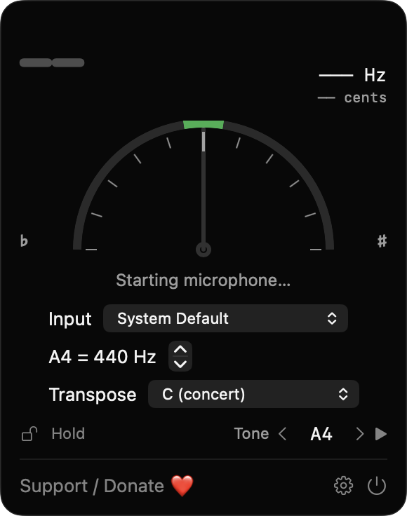
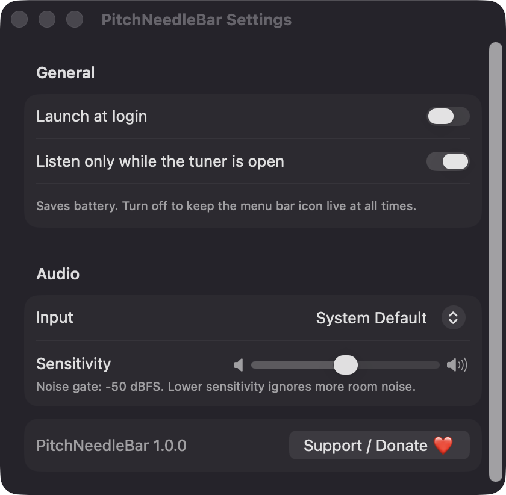

Real-time pitch detection
Uses the McLeod normalized square difference method on Accelerate with parabolic interpolation, covering roughly 30 Hz to 2 kHz. A noise gate and a five-reading median filter keep the needle steady.
Open source · macOS 14+ · Universal binary · Audio
Click the tuning fork, play a note, and see its name, frequency and how many cents sharp or flat it is. Free, offline and built natively for macOS.
Free & MIT licensed · Apple Silicon & Intel · Latest release

Features
One small window with the controls musicians actually use, and nothing that phones home.
Uses the McLeod normalized square difference method on Accelerate with parabolic interpolation, covering roughly 30 Hz to 2 kHz. A noise gate and a five-reading median filter keep the needle steady.
A semicircular gauge spans -50 to +50 cents beside the note name, octave and frequency in Hz. The needle turns green within 5 cents, and so does the menu bar icon.
Set A4 anywhere from 415 to 466 Hz, with 440 as the default. Transpose for C, B-flat, E-flat, F and A instruments.
Pick a note and play a sine wave to tune by ear. The mic pauses while the tone plays through built-in speakers to avoid feedback use headphones to tune along.
Freeze the current reading with Hold, or choose which microphone to listen to. If the chosen device disappears, the app falls back to the system default and tells you.
By default the app listens only while the tuner is open. Settings also cover launch at login and a noise-gate sensitivity slider.
Screenshots

Install
PitchNeedleBar is open source and not notarized with a paid Apple Developer ID, so macOS needs one extra step the first time.
xattr -cr /Applications/PitchNeedleBar.app
Download
Free, forever. Built for macOS 14 Sonoma or newer, Apple Silicon and Intel.
Not notarized: on first launch right-click PitchNeedleBar.app → Open.
FAQ
Yes. It is released under the MIT license, with no account, subscription or ads. The source is on GitHub, and an optional Support button opens a Ko-fi page in your browser if you want to chip in.
Only Microphone access, so it can detect the pitch of what you play. Launch at login is optional and only used if you turn it on. It does not ask for Accessibility or Screen Recording, and it makes no network connections.
Audio is analysed locally and is never recorded or sent anywhere. The only thing saved is your settings, such as reference pitch, transposition and chosen input device, in the app's standard macOS preferences on your Mac.
Notarization requires a paid Apple Developer account, and this is a free project. Right-click the app and choose Open once to launch it, or build it yourself from source with Xcode.
Support ❤️
PitchNeedleBar is a free, open-source alternative to paid utilities. If it earns a spot on your Mac, a coffee keeps the updates coming.
☕ Support Or on Ko-fi